21 February 2019 Building and optimizing a static website from scratch. An adventure in static pages, layouts, web frameworks, image compression and load times. 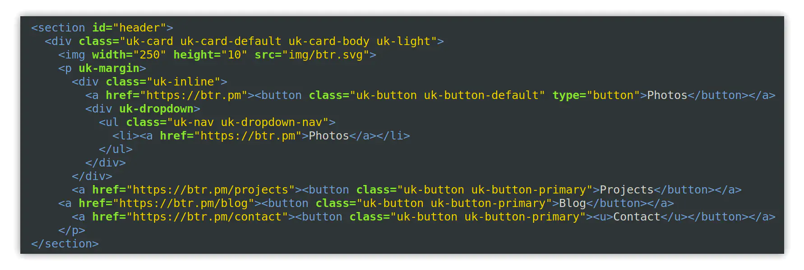 I used to host my website on Squarespace, a WYSIWYG website builder and CMS you often see promoted by just about every YouTube channel there is. It's pretty good if you want something easy and conventient but for the $144 per year pricetag for the lowest package, it just doesn't satisfy my needs. So I set out to build my own site from scratch using only HTML5, CSS3 and JS, and optimize it as much as I can, learning as I build it. This writeup contains a few long sections so I've made an index so you can skip to the parts you don't want to read. Hosting Layout and Framework UIKit Image Gallery Image Optimization Lazy Loading Page Speed CDN Fonts Small Optimizations Results Hosting. How can I host my website for less? Seeing as this project is going to be built in HTML, CSS and JS, I'm not going to need a server that runs PHP or a database like WordPress does. It's just going to be static pages. There are several hosting services that exist exclusively for static pages, some of the more popular ones include GitHub Pages, Netlify and even Azure. I decided to use Google Firebase because it's really simple to use as it's free provided I don't use over 10GB of bandwidth per month... That's kind of an issue considering the images I plan on hosting are about 10.1 MB of images on the home page alone and 40 MB of full resolution. So if 10,000 people were to visit the site in a month I'd run out of my free usage. This is fine as I only plan on using Firebase for the hosting temporarily, if I end up using too much bandwidth I'll likely move the site to a DigitalOcean droplet and get 1 TB of bandwith for $5/month. Layout and Framework UIKit I decided against building every element of the website from scratch as I'm not that insane. Most websites build off of templates or use existing web frameworks like Bootstrap, vue.js or Material Design Lite, Materialize, etc. I really like the minimalist look and ease of use that UIKit offers, it has dozens of components with several parameters, icons and great documentation to go with it. 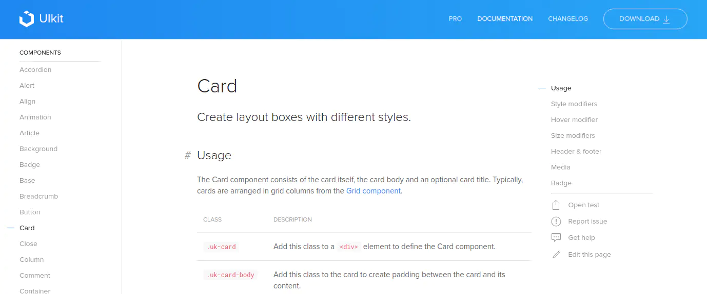 https://getuikit.com/docs/card I can basically browse their list of components, copy the example markup and plug it into any divs I like and the whole thing is responsive out of the box, you only have to import one JavaScript and CSS library to get it working too. Image Gallery The first thing I want people to see when they visit the site is an image gallery of my pictures, and it has to do 2 things right in order to satisfy my needs. Be responsive. Organize itself into a grid that leaves no gaps. This is easier said than done, basically I'm looking for a Google Photos implementation that doesn't involve complex mathematical theory to achieve. The first implementation I found was exactly what I needed by Justin Klemm. Unfortunately it's written in JQuery 2.1.3 from 2013, so I'm not going to import a 5+ year old JavaScript library to run an image gallery that doesn't even display properly in latest Firefox. I also found this post by xieranmaya detailing his "pure CSS" implementation of Google Photos' layout. Only problem is it relies on AngularJS to do the needed math to scale the images properly. 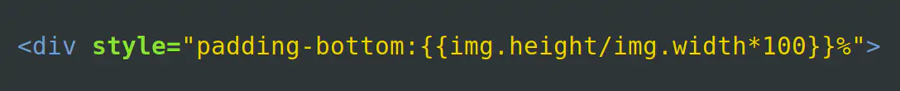 Yeah you can't do that with CSS alone :/ I was considering rewriting this in regular Javascript to avoid having to import more JS libraries that only get used for one specific thing when I realized UIKit already has a grid component I can potentially use. 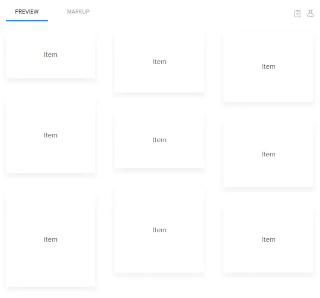 A cool feature of UIKit's grid component is that you can enable a masonry layout just by adding the "masonry: true" attribute to the grid's div, damn, that was easy. Now all I have to do is insert images in the place of the cards they have in the example and I now have a gallery that ticks all the boxes. Enabling the lightbox is just as easy, I just had to insert "uk-lightbox" into the div that contains the images and it will bring up an image lightbox provided the images are wrapped in an <a href> referencing the image you want the lightbox to display. A single div with a few parameters gives you a great image gallery. Image Optimization. Because I'm trying to optimize the website for speed, having 100 high res images on the home page isn't a great idea, so how can I force it to work? I created two sets of the same image gallery, one set of the gallery is scaled down and compressed thumbnail images for use on the homepage, about 1200x800. The other set is high resolution optimized images for use in the lightbox, about 2000x1300. I'm using 1200x800 thumbnails because when you scale down a large image to a smaller size, it still looks quite sharp. So if I compress 1200x800 images that don't look amazingly clear when viewed in full and display them at 500x300, they look decently sharp. 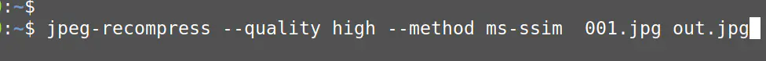 I experimented with MozJPG and compressing the images with the MS-SSIM compression algorithm and got pretty amazing results. 13.81% of the original image's size with almost no detectable difference. Left: Un-optimized - Right: Optimized Then I thought I'd try WebP because it's basically built for exactly what I'm trying to do, optimize images for the web, conserve bandwidth and retain quality. The results I got from compressing with WebP are pretty crazy. 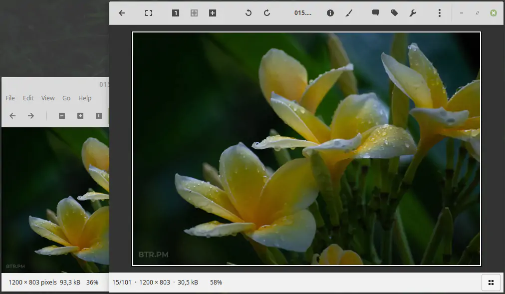 Left: Optimized JPG - Right: WebP The Optimized JPG comes out at 93.3 KB and the WebP brings it down to 30.5 KB with almost no quality difference, what the hell? How!? The entire set of 101 images in WebP comes out to 10.1 MB versus 12.2 MB in JPG. These are the settings I used on the pictures with the cwebp utility. cwebp -preset photo -sharp_yuv -m 6 -pass 10 -q 75 "[file]" -o "[file].webp" As great as WebP seems, there are still some browsers that just don't support it, mainly Safari as of writing this. So for compatability reasons I have to add this fallback to almost every img tag. onerror="this.onerror=null; this.src='/img/location/img.jpg'" Lazy Loading Despite the images being optimized so well it still leads to 10 MB loaded every time you load the homepage. Fortunately UIKit paired with the latest browsers should lazy load the images, meaning once you scroll into the view of the image it will start to load, instead of all at the same time. That means we the page only loads about 1MB of images in the initial viewport. This doesn't happen on all browsers unfortunately. 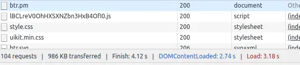 When clicking on an image it will load the higher resolution version of the image for better viewing, this is doable by wrapping the image in the gallery with an <a href> pointing to the location of the larger image you want to display in UIKit's lightbox. 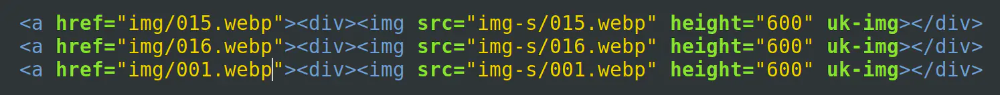 The img/ folder is where the larger images are stored while "img-s/" is where the thumbnails are stored. Page Speed Content Delivery Network (CDN) I made use of CloudFlare to further optimize the load times of the website, CloudFlare has great features for free users, the ones I use are the Caching features to set the browser cache expiration time to 2 days. The Auto Minify function to cut down the size of the HTML, stylesheets and JavaScript files in use on the site. 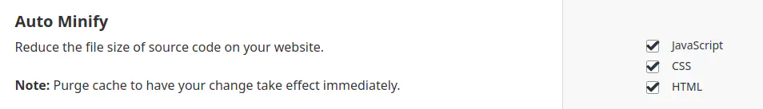 I also used their domain forwarding page rule to forward www. to the root domain and to ensure SSL is always in use. Fonts On the site I'm using a pretty obscure font called B612, it's a font commissioned by Airbus and made by Intactile Design that aims to improve legibility of text on cockpit screens. I think it looks really cool and adds a unique style to the site. I experimented with hosting the fonts on the server rather than requesting the font through Google Fonts. Hosting the fonts on the server. Importing from Google Fonts. That's a 3.6 second difference. This is because Google Fonts will intelligently serve only the fonts needed rather than every variation of the font, meant also meant that the CSS for loading the font went from this: 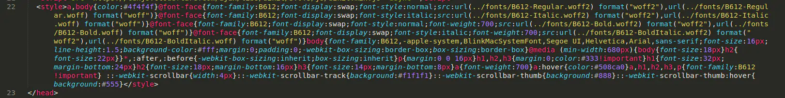 To this: 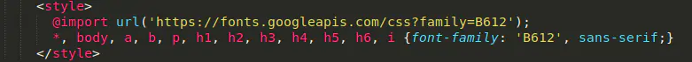 Small Optimizations. I put: <link rel="dns-prefetch" href="//cdnjs.cloudflare.com"> <link rel="dns-prefetch" href="//btrdotpm.firebaseapp.com"> Into the <head> of all documents so it resolves CDNJS and the firebaseapp subdomain the content is hosted on early so it doesn't have to resolve those domains for every new image that gets loaded. UIKit comes with a JS library that contains a few dozen SVG icons you can use anywhere but I only use 5 of them, instead of importing a whole set of 50+ SVG icons on all pages I stored only the ones in use on the server and embedded them with <img src>. <a href="https://github.com/x8BitRain"><img src="img/github.svg" width="20" height="20"></a> Annoyingly, most of UIKit's CSS and JS libraries go unused as I only include 4 components on the home page. I could shave a lot of KBs off the load time if I were to pick out only the parts of the CSS and JS that are in use but the convenience of the CDN embedding the latest UIKit libraries outweighs the shorter load time of having less CSS/JS. Results The finished product is a pretty quick site with a PageSpeed Insights score of 96 on mobile and 100 on desktop, of course it's not the fastest it can be but I'm pretty happy with the results. 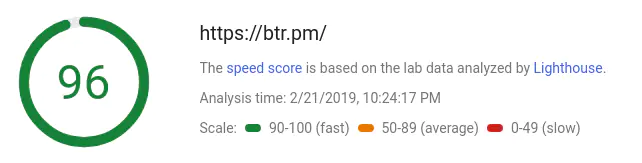 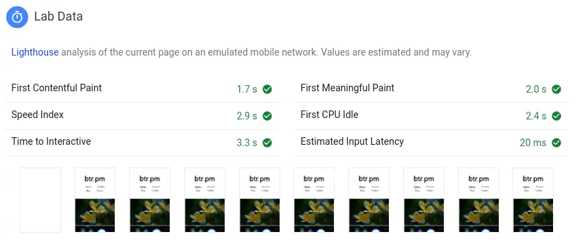 Comparing load times to the old Squarespace site I had with more or less the same layout as the site I built: 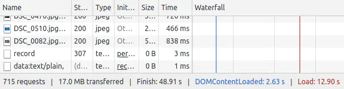 Squarespace site 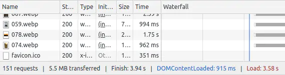 Static site It's a hell of a lot quicker.